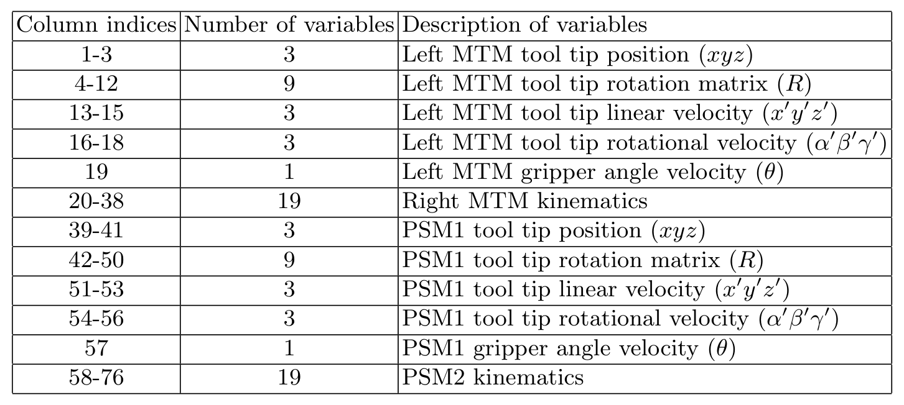
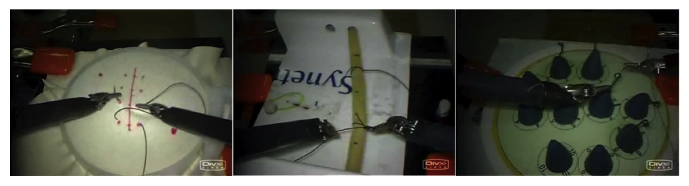
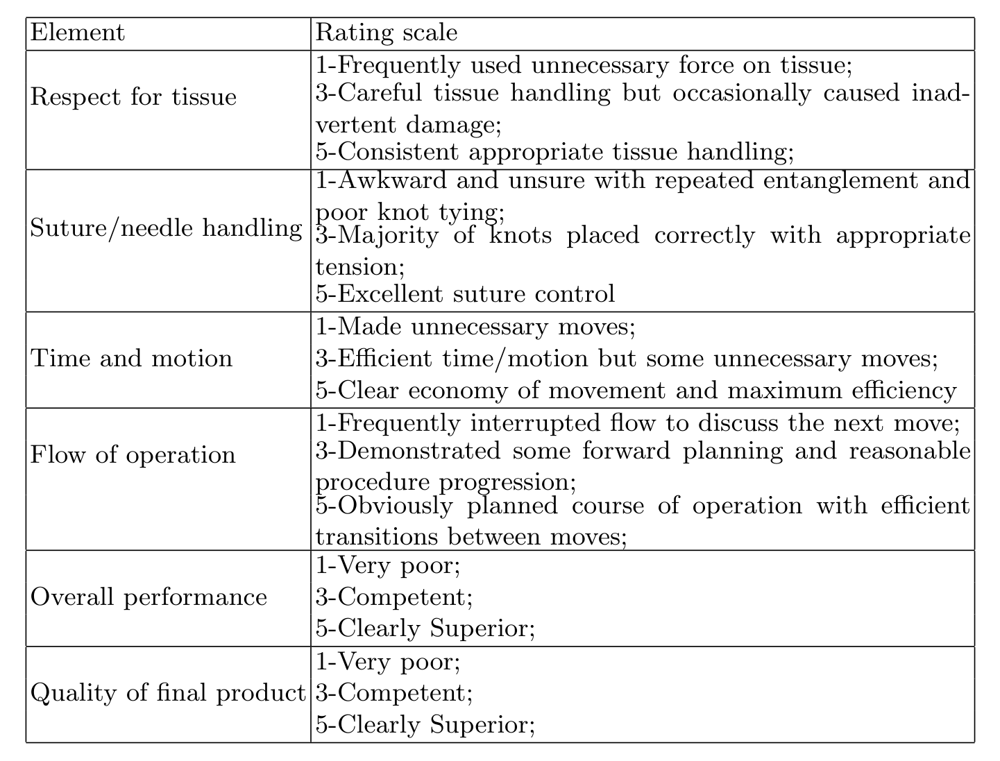

图文解读
1背景与动机
手术技术欠佳与术后并发症有关，而评价技术长期靠专家目测。 论文引用的研究显示，技术失误是再手术和再入院最常见的原因，所以让外科医生更快、更客观地掌握技术能直接影响患者安全。
约翰斯·霍普金斯大学的 Language of Surgery 项目把手术动作看作一种语言：基本动作按约束依次组合，于是可以借用语音识别的方法来切分和评价。做这类研究需要同一时间轴上的工具轨迹、视频和人工标注，当时没有公开的这类数据。本文就是把项目内部一次台架实验整理后公开。
2核心观点速览
这是一份数据说明书，不含任何模型的数值结果。
- 数据：8 名外科医生在达芬奇机器人上把缝合、打结、穿针各做 5 遍，可用试次共 103 个；每个试次有 76 维运动学和左右两路视频，逐帧同步。
- 标注：15 个手势的起止帧（单人标注），以及改良
OSATS的 6 要素技能评分（单名外科医生，设盲）。 - 协议：
LOSO（5 折）和LOUO（8 折）两种交叉验证划分，加三种HMM与视频分析工具。 - 边界：没有基线、没有指标定义、没有标注一致性；技能分档是自报时长，每档 2 到 4 人。
3信号从哪来
这一节回答：数据能不能直接拿来建模。 达芬奇系统由医生端的两个主操作手（MTM）、患者端的从操作臂（PSM）和带立体内镜的相机臂组成。作者经研究接口以 30 Hz 记录左右 MTM 和两个 PSM。
每个操作臂 19 个变量：3 个位置、9 个旋转矩阵元素、3 个线速度、3 个角速度、1 个夹爪变量，4 个操作臂共 76 维，全部在同一坐标系下。

视频是左右两路，30 Hz、640 x 480，与运动学逐帧对齐。数据不含相机标定参数，想做三维重建要自己标定。夹爪变量在正文是角度、在表 1 是角速度，论文未说明以哪个为准。
信号清楚了，下一个问题是任务和人。
4任务与受试者
三个台架任务是外科培训课程的常见内容：缝合要沿切口进出针四次；打结是打一个单环结；穿针是从右到左穿过四个小金属环。做任务时不许移动相机，也不许用离合。

受试者的经验是自报的：D、E 超过 100 小时，C、F 在 10 到 100 小时，其余四人少于 10 小时，全部右利手。每档只有 2 到 4 人，“专家对新手”的比较其实是几个人之间的比较。
每人每任务 5 遍，每遍平均约两分钟。损坏试次为缝合 1、打结 4、穿针 12，穿针可用样本比缝合少约三成。损坏的试次属于谁论文未说明。
5标签怎么定
手势标签来自 15 个手势的共享词表，例如推针穿过组织、把针从左手交到右手、双手拉线。词表与一名心外科医生商定，由一名标注员看视频记下每段手势的起止帧；除试次末尾少量帧外，每帧都有标签。
技能标签是改良 OSATS 的全局评分：6 个要素各 1 到 5 分求和，由一名妇科外科医生对受试者身份设盲后逐试次打分。

两类标签都只来自一个人，论文未报告一致性。这意味着模型之间几帧的边界差异或一两分的评分差异，可能落在标注噪声之内。
6划分与工具
LOSO：超试次 $i$ 是某任务所有人的第 $i$ 遍，5 折，每折留一个超试次。LOUO：8 折，每折留出一名受试者，测对新医生的泛化。
论文只统一了切分，没有统一指标。不同论文即使用同一套折，也可能在“分类”（已知边界）或“识别”（同时切分）设置下用不同指标报告。
工具包提供三种方法：手势子 HMM 拼接成复合 HMM 并用语法约束解码；稀疏字典观测的 HMM；视频上的 LDS、视觉词袋和多核学习组合。
7结果没说什么
- 没有任何基线数值，不知道哪种方法在哪个划分上更好。
- 自报分档与
GRS是否一致，GRS的分布如何，论文未说明。 - 只有台架任务，不能代表真实手术里的视野变化、组织形变和遮挡。
- 受试者列表正文漏写了 G，与 8 人的说法不一致。
8一个替代解释
用自报分档训练的技能分类器，可能只是记住了某个人的动作风格。每档 2 到 4 人，LOSO 下同一受试者的其他 4 遍都在训练集里，模型可以借个人风格得分（推断）。
能区分两种解释的是 LOUO 下的技能结果和 GRS 与分档的相关性，本文都没给。所以评估技能时应以 LOUO 为主，并写明标签来源。
9复现与复用要注意什么
- 按表 1 列索引切分各操作臂，注意
PSM1是右侧、PSM2是左侧。 - 同时报告
LOSO与LOUO，写明分类还是识别设置、用什么指标。 - 先看夹爪变量的数值范围再决定把它当角度还是角速度。
- 穿针只有 28 个试次，跨任务比较时要考虑样本量差异。